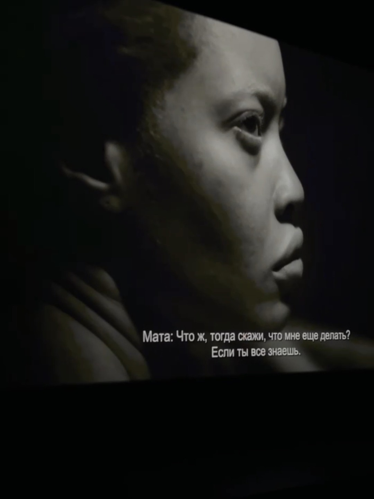
Бэкстейдж
Закулисье съёмок — то, что остаётся за кадром.
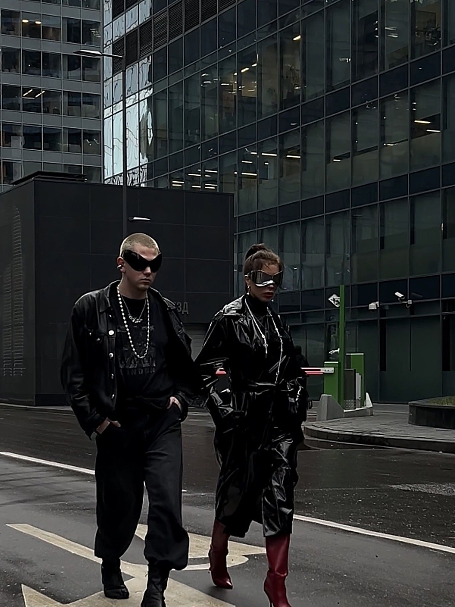
Backstage с фотосессии
Для блогера-предпринимателя
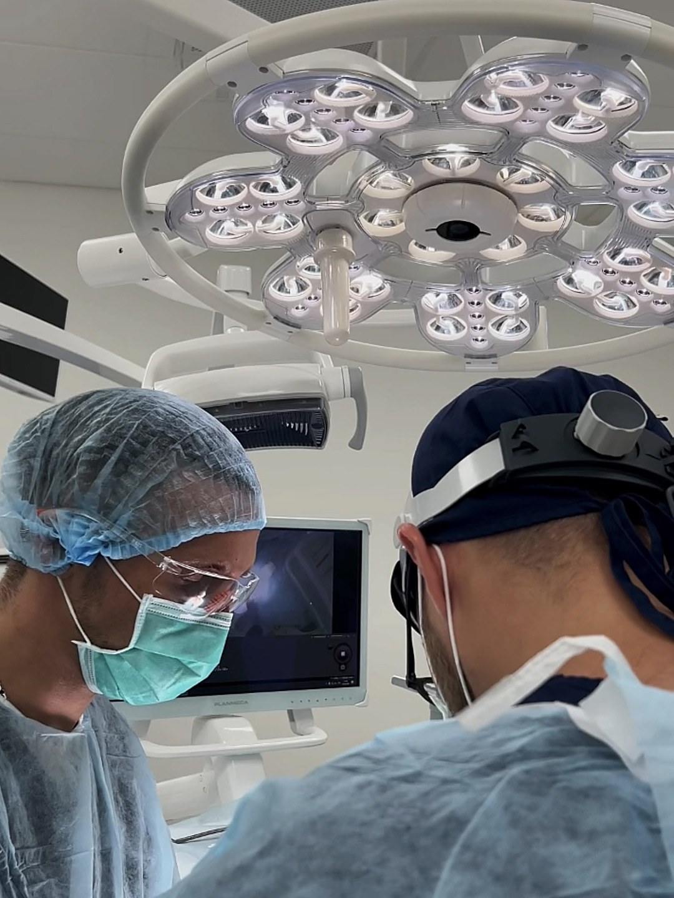
Хирургическая операция
В клинике Iceberg
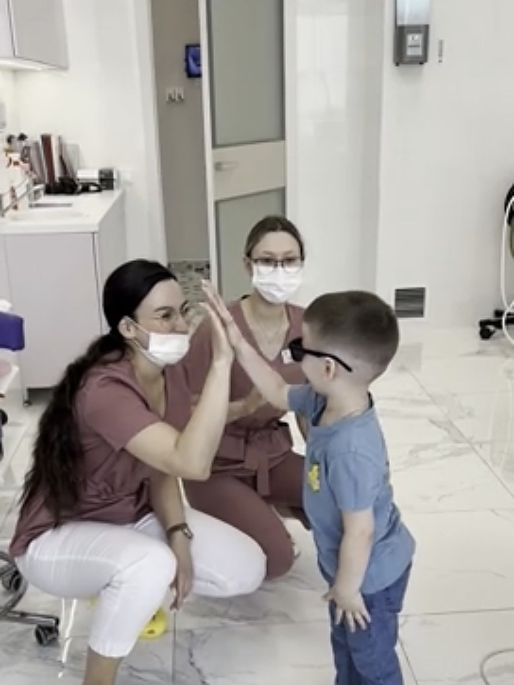
Первый приём у стоматолога
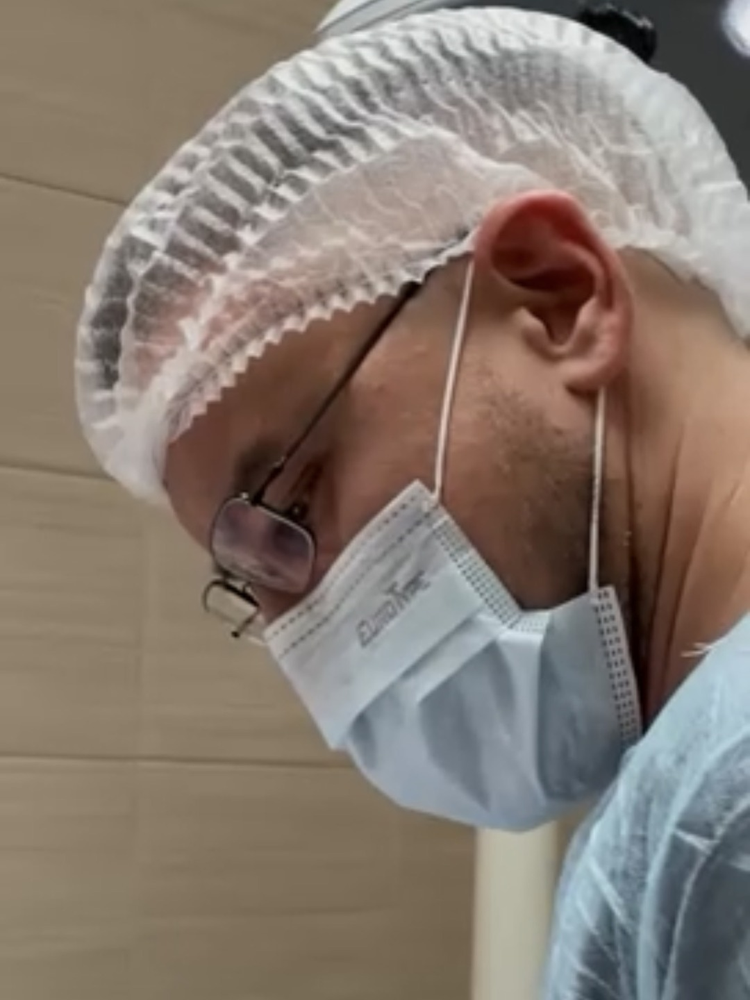
Приём хирурга
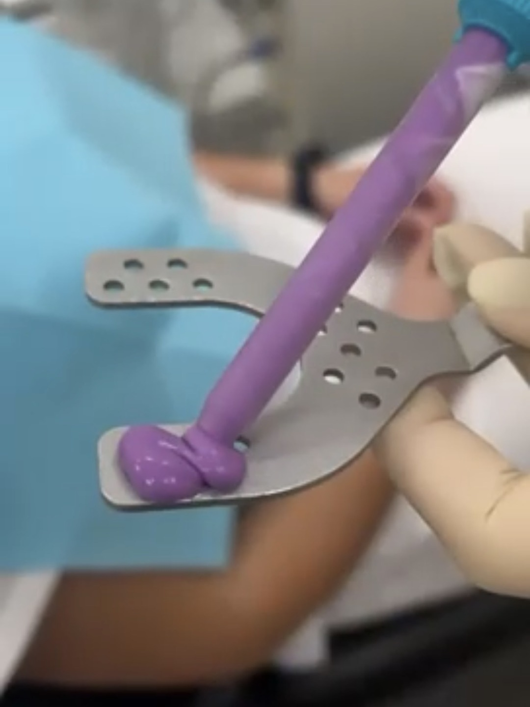
Stories для клиники
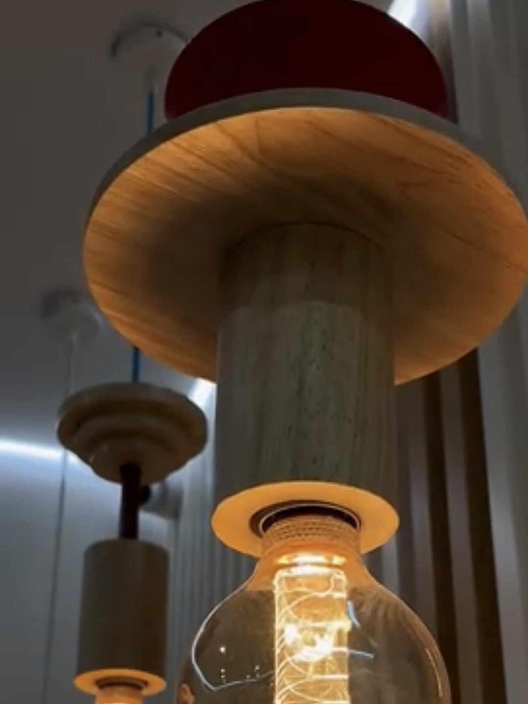
Reels для стоматологии
Под трендовый звук
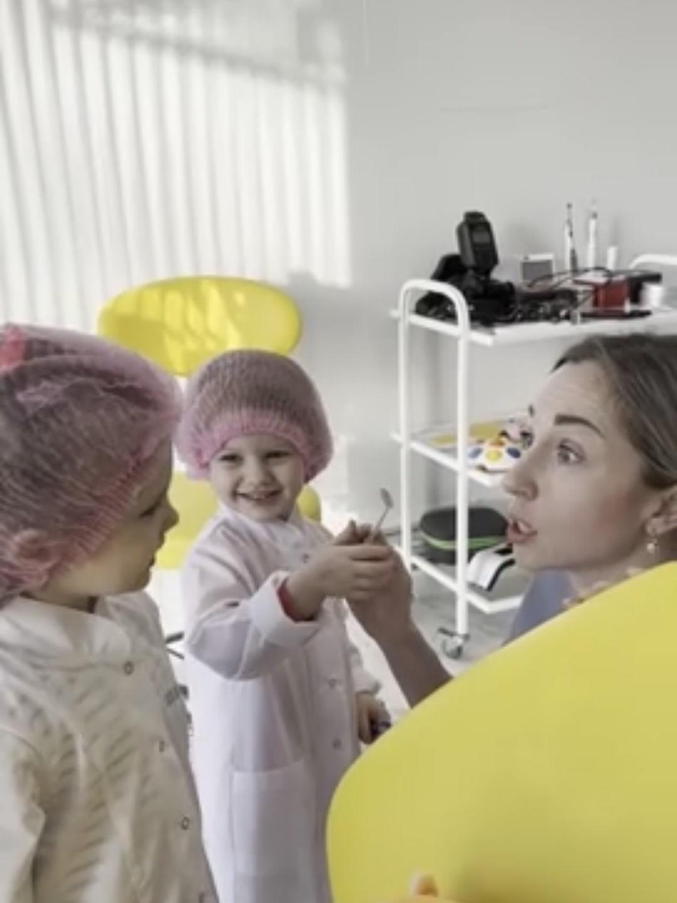
Детский приём
Приёмы с детьми в стоматологии
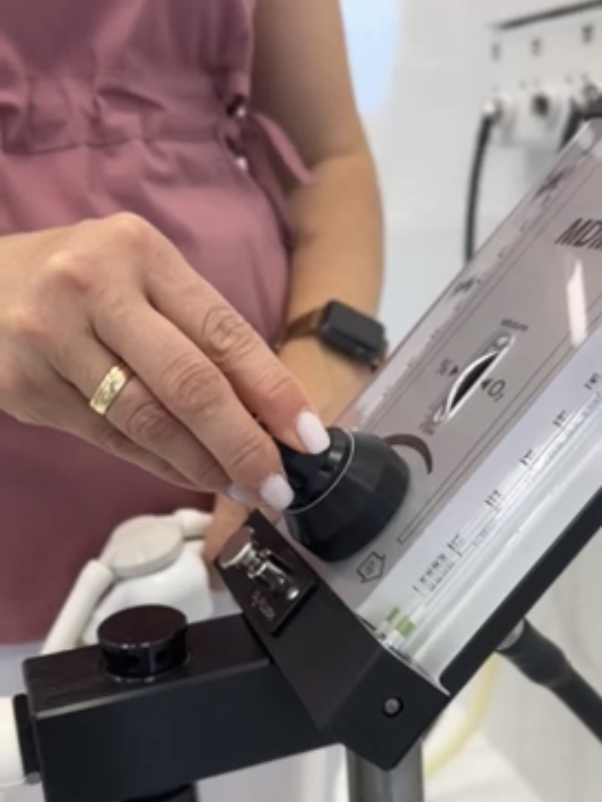
Обучение врачей
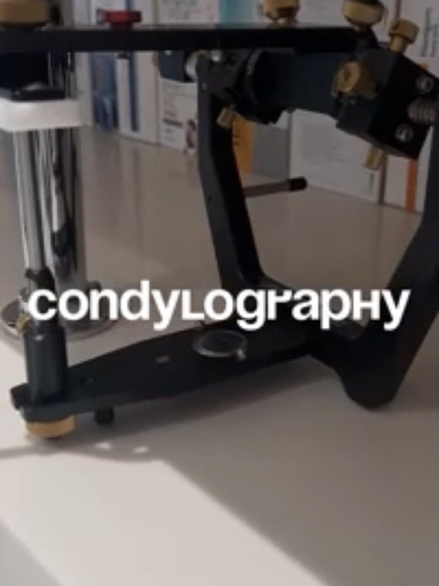
Диагностика сустава
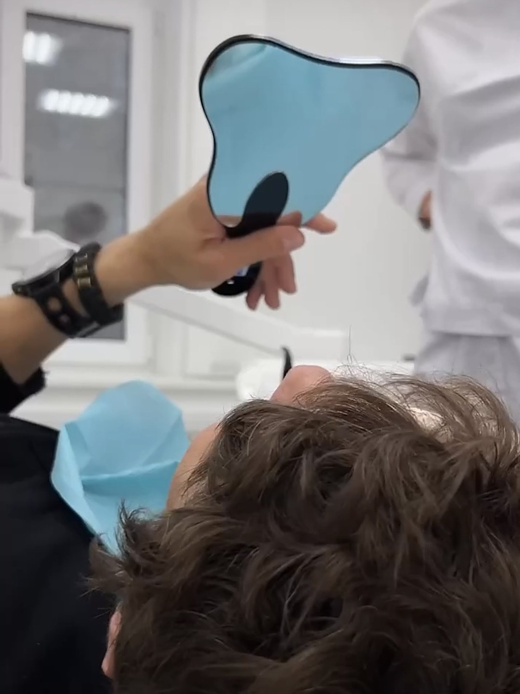